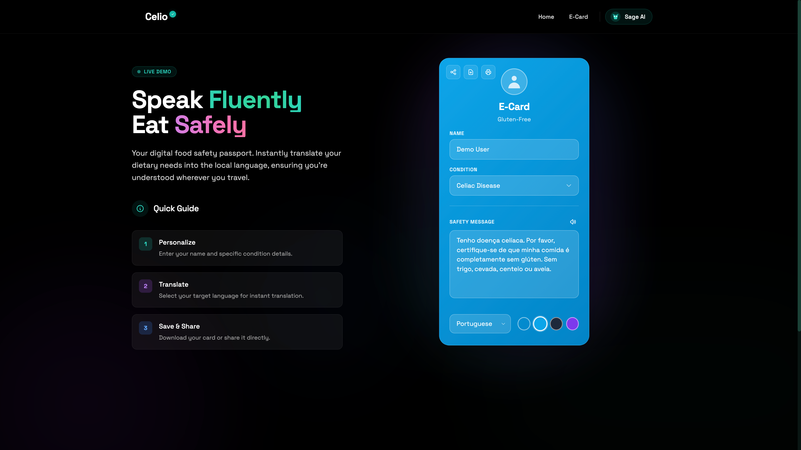

B2C Mobile Target
Celio
User Research & Product Design. Identified safety friction in communicating food allergies abroad. Sole designer/engineer for a multilingual platform in beta on TestFlight with 50+ users across 3+ countries.
Initialize Case Study →
Alpine.js
Django
TailwindCSS
 (1).png)